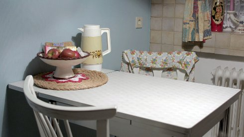

The Sleeper

Alex Gerbaulet
| DE 2018 17 min – HD – German I+B+V: Alex Gerbaulet – T: Tom Schön – S: Philip Scheffner – P: Caroline Kirberg, Alex Gerbaulet Website Alex Gerbaulet |
Tuesday 16 oct 8.30 pm werkstattkino
The film approaches the biographies of two women whose personalities were forcibly hidden behind their roles as wives and homemakers. They remained invisible until they themselves became the aggressors.
Alex Gerbaulet born in 1977, lives in Berlin where she works as an artist, filmmaker, and curator. She studied philosophy, media, and liberal arts (with Birgit Hein) in Braunschweig and Vienna. She has received numerous grants, her works have been exhibited internationally, and her films has been shown at a variety of festivals in Germany and abroad. In addition she works as a lecturer and as an independent curator for art institutions and festivals. Since 2014 she has worked as a writer and producer with pong film in Berlin. In her artistic work she uses both documentary and fictionalized approaches to examine the representability of reality and memory.
|
| Films Über Land 2002 – Datterode 2006 – Gefangenenbilder 2007 – Schon Nachmittag 2009 – Schicht 2015 (10. UX) – Tiefenschärfe 2017 (12.UX)
|